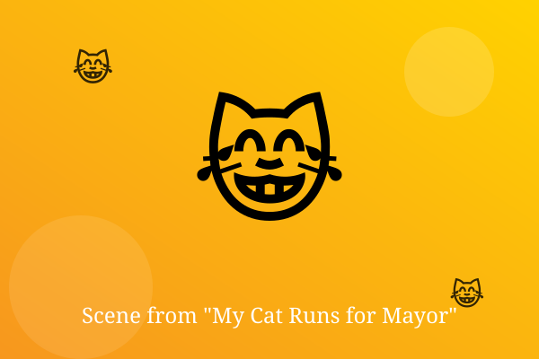

Chapter 1: Paws for Office

It started as a prank. The town of Little Gumble put 'Mr. Whiskers' on the ballot, and the joke got 4,000 votes.
Now Mr. Whiskers sat on the mayor's desk, ignoring every question and knocking pens onto the floor.
His campaign manager, a nervous teenager named Dev, kept saying, 'He is very focused on policy.' Mr. Whiskers yawned.
— End of Chapter —